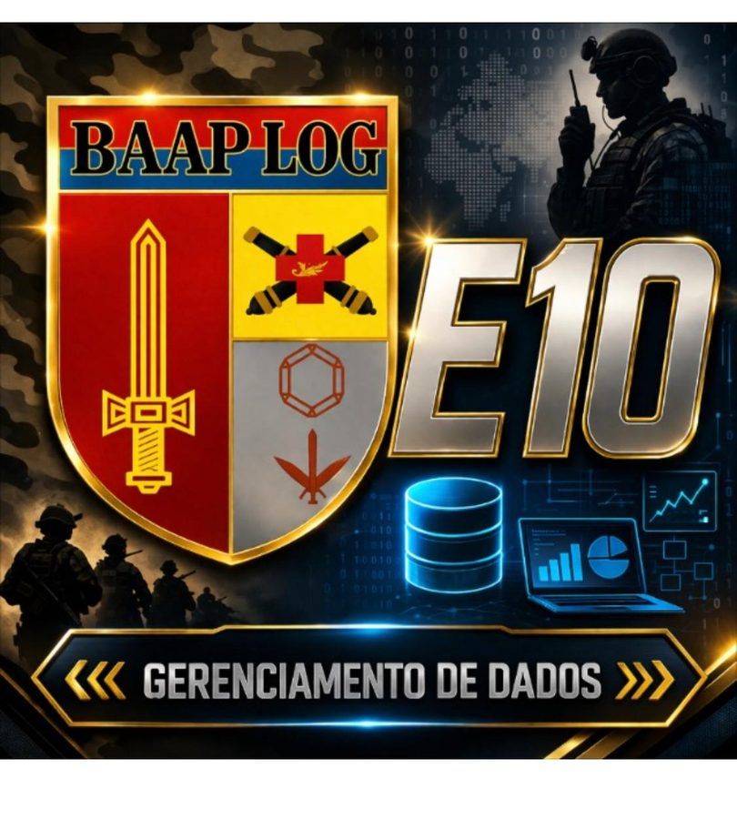

Painel de acompanhamento das contas de concessionárias das seis Unidades Gestoras apoiadas: histórico de consumo, de tarifas e de despesa com água e esgoto, energia elétrica, telefonia e serviços postais. Não trata só do que foi pago — acompanha quanto se consome, a que preço e como isso evolui ao longo dos anos.
São duas bases de dados: o SAG — Sistema de Acompanhamento da Gestão, de onde vêm o consumo medido, o faturamento e as metas (2023 a 2026); e o Tesouro Gerencial, de onde vem a execução orçamentária (2022 a 2026). Cruzar as duas é o que permite separar o que a unidade consumiu do que ela efetivamente pagou — e é também o que revela os defeitos de lançamento documentados aqui.

Tarifa média efetiva (valor da fatura ÷ m³ medidos), jan–jun de cada ano. O rótulo inferior traz o volume consumido no período. Valores nominais, sem correção pela inflação.
Quanto da variação da despesa veio do preço (tarifa por m³) e quanto veio do volume (m³ consumidos). Efeito preço = (tarifa 2026 − tarifa 2025) × volume 2025.
As UG marcadas com R tiveram o gasto reconstruído (kWh × tarifa lançada), porque o SAG recebeu tarifa no lugar do valor da fatura. Ver achado A2.
Pagamentos totais do ano (despesa do exercício + restos a pagar de exercícios anteriores) — o desembolso real com concessionárias.
Razão entre o pago no ano e o faturamento lançado no SAG. Perto de 1,00, o sistema reflete a despesa; acima disso, a fatura cobra o que o sistema não registra.
Os planos internos de menor porte, incluindo o de telefonia móvel (PTELM). Valores pagos no ano (despesa do exercício + restos a pagar).
Quanto da despesa liquidada de cada Unidade Gestora foi para água, energia, telefonia e correios.
Seis achados, do crítico ao informativo. Cada um traz a evidência numérica extraída dos próprios arquivos do SAG.
As seis Unidades Gestoras apoiadas pela BA Ap Log Ex, todas na 1ª Região Militar. As denominações por extenso foram informadas pela própria Base — o SAG exporta apenas a sigla.
Meses com lançamento em cada ano. 12 série completa · 6 parcial · 0 sem lançamento · 6 2026 em andamento (esperado).